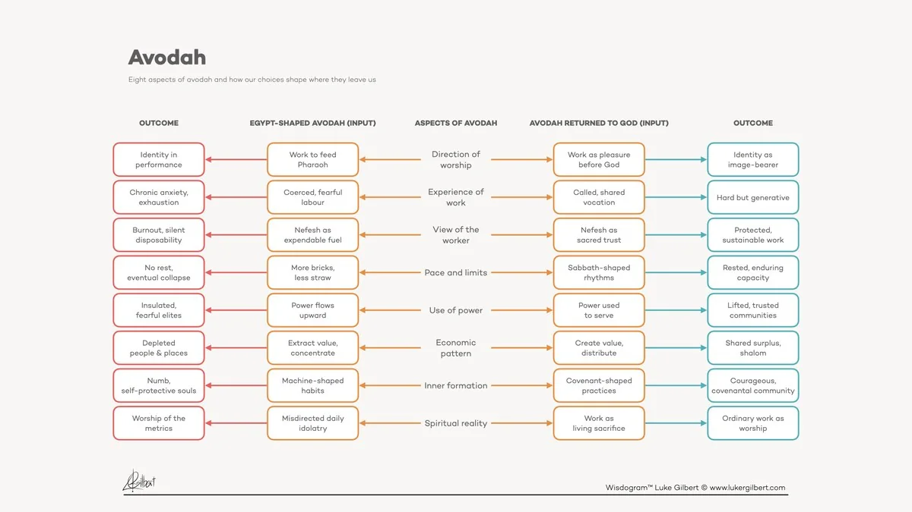

Faith & formation · Matrix
Eight Aspects of Avodah

Pharaoh didn't just exploit labour; he captured worship and called it productivity. Eight aspects of avodah (work, service and worship as one) and where they lead when our work serves Egypt or is given back to God.
The walkthrough is free to read on What Matters, my Substack.
Scripture on this Wisdogram
Genesis 2:15Colossians 3:23Exodus 3:10–121 Thessalonians 4:11–12Deuteronomy 24:14–15Leviticus 25:39–43Exodus 34:21Deuteronomy 5:13–15Numbers 3:7–8Mark 10:42–45Acts 4:32–35Deuteronomy 8:2–3Romans 12:1–2Exodus 3:12Joshua 24:14–15Matthew 6:24Genesis 3:17–19James 5:4Jeremiah 22:13Amos 2:6–7Psalm 127:2Micah 3:1–3Genesis 47:13–26Isaiah 5:8
In this Wisdogram
Identity as image‑bearerWork to feedPharaohOutcomeDirection of worshipIdentity inEgypt‑shaped avodah (input)AvodahAspects of avodahCoerced, fearfulExperience of workHard but generativeCalled, shared vocationChronic anxiety, exhaustionProtected,Nefesh as
Found yourself somewhere on this map?If you’d like to talk it through with someone, I’d be glad to listen.